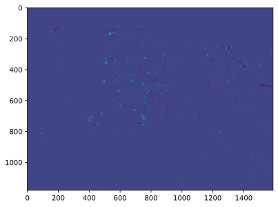

Computer Vision - Harris Corner Detector
Jacky Baltes
National Taiwan Normal University
Taipei, Taiwan
jacky.baltes@ntnu.edu.tw
17 October 2024

import PIL
fig = plt.figure()
ax = fig.add_subplot(1,1,1)
im = PIL.Image.open( str(bogie.localFileStem) + "." + bogie.suffix )
img = np.asarray(im)
ax.set_xticks([])
ax.set_yticks([])
ax.imshow(img)
fig100 = addJBFigure("fig100", 0, 0, fig)
plt.close()
Corners
- Edges allow us to localize points only in one direction (perpendicular to the edge)
- Use corners to uniquely identify and localize points in the image
- Constructive definition: corners are points that are different from its surroundings
- A corner is a point, where the patch around the point can be localized (i.e., very different when shifted)
- Define the difference as the sum of the squared differences between the corner patch and the neighborhood patches
- \[ S(\Delta x, \Delta y) = \sum_x \sum_y w(x,y)( I(x+\Delta x, y + \Delta y) - I(x,y) )^2 \] . where \( w(x,y) \) is a weighing function for different pixels
- Efficient implementation of function \( S \) depends on the derivative of the image function
Taylor Expansion
Taylor expansion/series is a way to represent the neighborhood \( x \) of a function \( f \) that is known at a given point \( a \).
Taylor series is an infinite sum of the form: \[ f(x) \approx f(a) + \frac{f'(a)}{1!}(x-a) + \frac{ f''(a)}{2!}(x-a)^2 + \frac{ f'''(a)}{3!}(x-a)^3 + ... \]
We can replace \( (x - a) \) with \( \Delta x \) \[ f(x) \approx f(a) + \frac{f'(a)}{1!}\Delta x + \frac{ f''(a)}{2!}(\Delta x)^2 + \frac{ f'''(a)}{3!}(\Delta x)^3 + ... \]
Taylor Expansion in 2D
Extend the idea to 2D functions (for images)
\[ f(x + \Delta x,y + \Delta y) = f(x,y) + \Delta x f_x(x,y) + \Delta y f_y(x,y) \\ + \frac{1}{2!} [ \Delta x^2 f_{xx}(x,y) + \Delta x \Delta y f_xy(x,y) \Delta y^2 f_yy(x,y) ] \\ + \frac{1}{3!} [ \Delta x^3 f_{xxx}(x,y) + \Delta x^2 \Delta y f_xxy(x,y) + \Delta x \Delta y^2 f_xyy(x,y) ... + \]
Taylor Expansion in 2D
Extend the idea to 2D functions (for images)
\[ f(x + \Delta x,y + \Delta y) = f(x,y) + \Delta x f_x(x,y) + \Delta y f_y(x,y) \\ + \frac{1}{2!} [ \Delta x^2 f_{xx}(x,y) + \Delta x \Delta y f_xy(x,y) + \Delta y^2 f_yy(x,y) ] \\ + \frac{1}{3!} [ \Delta x^3 f_{xxx}(x,y) + \Delta x^2 \Delta y f_xxy(x,y) + \Delta x \Delta y^2 f_xyy(x,y) ... + \]
Taylor Expansion in 2D
Extend the idea to 2D functions (for images)
\[ f(x + \Delta x,y + \Delta y) = f(x,y) + \Delta x f_x(x,y) + \Delta y f_y(x,y) \\ + \frac{1}{2!} [ \Delta x^2 f_{xx}(x,y) + \Delta x \Delta y f_{xy}(x,y) + \Delta y^2 f_{yy}(x,y) ] \\ + \frac{1}{3!} [ \Delta x^3 f_{xxx}(x,y) + \Delta x^2 \Delta y f_{xxy}(x,y) + \Delta x \Delta y^2 f_{xyy}(x,y) ... + \]
Harris Corner Detector
Use only the first derivative of the 2D expansion
\[ I(x+\Delta x, y + \Delta y) = I(x,y) + \Delta x I_x(x,y) + \Delta y I_y(x,y) \] \[ S(\Delta x, \Delta y) \approx \sum_x \sum_y w(x,y)(I(x,y) + \Delta x I_x(x,y) + \Delta y I_y(x,y) - I(x,y))^2\\ \approx \sum_x \sum_y w(x,y)(\Delta x I_x(x,y) + \Delta y I_y(x,y))^2\\ \approx \sum_x \sum_y w(x,y)(\Delta x^2 I_x(x,y)^2 + 2 \Delta x \Delta y I_x(x,y) I_y(x,y) + \Delta y^2 I_y(x,y)^2) \]
2D Taylor Series and Images
M looks like this
\[ M \approx \sum_x \sum_y w(x,y) \left[ \begin{array} \\ I_x(x,y)^2 & I_x(x,y) I_y(x,y) \\ I_x(x,y) I_y(x,y) & I_y(x,y)^2 \end{array} \right] \]\( w(x,y) \) is weighting function, but in general, we just set it to 1 for pixels in the neighborhood
\( I_x \) and \( I_y \) are the partial derivatives in x and y direction, often calculated using the Sobel edge detector
Corner Response
Define R as \( det M - k (trace M )^2 \), where \( k \) is a parameter 0.04 to 0.06
If \( R \) is large and positive, then we found a corner
If \( R \) is large and negative, then we found an edge
If \( R \) is small, then we found a uniform region
Sobel_x = np.array([[+1, 0, -1],\
[+2, 0, -2],\
[+1, 0, -1]])
Sobel_y = np.array([[+1, +2, +1],\
[ 0, 0, 0],\
[-1, -2, -1]])
img_dx = np.zeros( (img.shape[0]-2,img.shape[1]-2) )
img_dy = np.zeros( (img.shape[0]-2,img.shape[1]-2) )
for i in range(img.shape[0]-2):
for j in range(img.shape[1]-2):
img_dx[i,j] = sum( sum( Sobel_x*img[i:i+3,j:j+3, 1] ) )
img_dy[i,j] = sum( sum( Sobel_y*img[i:i+3,j:j+3, 1] ) )
fig = plt.figure( dpi=300 )
ax1 = fig.add_subplot( 1,2,1 )
ax1.set_title( "Sobel X")
ax1.imshow( img_dx, cmap='gray' )
ax2 = fig.add_subplot( 1,2,2 )
ax2.set_title( 'Sobel Y')
ax2.imshow( img_dy, cmap='gray' )
f200 = addJBFigure("f200", 0, 0, fig)
plt.close()
img_dx2 = img_dx * img_dx
img_dy2 = img_dy * img_dy
img_dxdy = img_dx * img_dy
w = np.ones( (9,9) )
k = 0.05
harris = np.zeros((img_dx.shape[0]-8, img_dy.shape[1]-8))
for i in range(img_dx.shape[0]-8):
for j in range(img_dx.shape[1]-8):
a = sum(sum(w*img_dx2[i:i+9,j:j+9]))
b = sum(sum(w*img_dxdy[i:i+9,j:j+9]))
c = b
d = sum(sum(w*img_dy2[i:i+9,j:j+9]))
M = np.array(([[a,b],\
[c,d]]))
R = a * d - b * c - k*( a + d )**2
harris[i,j] = R
fig = plt.figure()
ax = fig.add_subplot(1,1,1)
ax.imshow( harris )
h1 = addJBFigure("h1", 0, 0, fig )
plt.close()
Out of Harris Corner Detector
